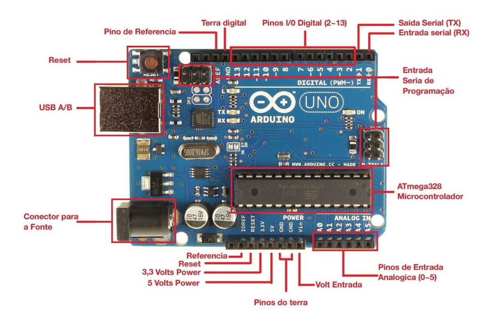

Modelo e Versão: Tipo e edição da placa Arduino. Arquitetura do Microcontrolador: O tipo de processador que a placa Arduino utiliza. Clock Speed: Velocidade do processador da placa. Memória: Capacidade de armazenamento da placa. Portas de E/S: Conexões disponíveis para conectar dispositivos externos. Interfaces de Comunicação: Métodos de comunicação com outros dispositivos. Tensão de Alimentação: Faixa de voltagem suportada pela placa. Consumo de Energia: Quantidade de energia que a placa utiliza. Esses são os principais dados que descrevem uma placa Arduino e ajudam a entender suas capacidades e limitações.
Dados da Placa
